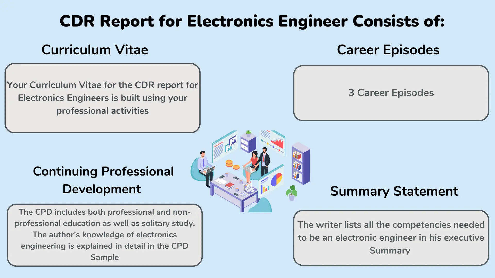

Australia has a great quality of life, including immense diversity, development, infrastructure, and elegance that make it one of the most developed countries. Because of this, electronics engineers are overwhelmingly drawn to Australia for its social and economic advancements, recently proven by it being named the world's happiest nation. The ever-growing economy and infrastructure have made Australia the best place to launch a career in electronics engineering. Therefore, if you wish to work as an electronics engineer in Australia, you must pass Engineers Australia's migration skills assessment and submit an engineering CDR report.
What is Electronics Engineering?
Electronics engineering is a field of engineering that deals with the design, development, construction, and testing of electronic components, devices, and systems. It also covers the application of electricity, communications, and computing technologies in areas such as robotics, biomedical engineering, aerospace engineering, communications systems, digital signal processing, and industrial automation.
Format of the CDR Report for Electronics Engineers
The following is the content format when writing your CDR for electronics engineers:
1. Curriculum Vitae
Your curriculum vitae for the CDR Report for Electronic Engineers is built using your professional activities.
2. Continuing Professional Development
The CPD includes both professional and non-professional education as well as solitary study.
3. Career Episodes
A career Episode Report is a document that provides an overview of an individual's experience, expertise, and accomplishments in a particular career. The report is used to demonstrate the individual's capabilities in a specific field and is often required for professional or educational programs. It is important because it helps employers and institutions evaluate the individual's competencies and match them with the requirements of the job or program.
Electronics Engineer Career Episode Report - 1
Project Name: MIMO OFDM 4x4
In his first career episode, the author discusses a project he worked on while obtaining a Bachelor of Technology in Electronics and Communication. Based on his graduation project, "MIMO OFDM 4x4", for this professional episode (5G), the writer was then expected to perform the following duties:
- Using the internet and reference materials to research and gather information
- Understanding the MIMO, OFDM, transmitter, and other modulation techniques' underlying principles
- Doing a quality check on the designed project's work processes to ensure that it adhered to the highest standards
Electronics Engineer Career Episode Report - 2
Project Name: Use of an RF transceiver in a Smart Security Surveillance System
In the second career episode, the author discusses the engineering techniques he employed while getting a bachelor's degree in electronics and communication. His job duties and responsibilities for the project at this time were:
- An examination of the mobile application development platforms for Android smartphones and how well they integrate with other electronic systems
- Database design for home security system monitoring
- Criteria for security system network node specifications
- Modeling of computer simulations for evaluation of the intended system's performance
Electronics Engineer Career Episode Report - 3
Project Name: An Effective Method for Implementing BCD Adder Using Toffoli Gate
The writer presents his final project work from when he was pursuing his Bachelor of Technology in Electronics and Telecommunications in the third career episode. The project's title was "An Effective Method for Implementing BCD Adder Using Toffoli Gate." His tasks and responsibilities for the project at this time were as follows:
- Read a variety of reference books to gain crucial information
- Conducted a literature review to better grasp the subject
- Solving the technical issues to ensure the success of his project
- Doing a quality check on the designed project's work processes to ensure that it adhered to the highest standards
It is a complex process, so going through some career episode samples can be very helpful.
4. Summary statement
The writer lists all the competencies needed to be an electronic engineer in his executive summary statement writing. According to the Engineers Australia booklet on the assessment of migration skills, there are cross-references in the summary statement to the pertinent section of the episodes. The summary statement for Engineers Australia should comply exactly with Engineers Australia's current criteria.
Why Does an Electronic Engineer Need To Submit a CDR Report?
The Competency Demonstration Report (CDR) is an essential requirement for electronics engineers seeking to migrate to Australia. It is an in-depth evaluation of their technical knowledge, capabilities, and overall suitability for the role. The CDR is assessed by the Engineering Australia board and provides a comprehensive assessment of the engineer’s professional experiences and achievements.
This report provides valuable insight into the engineering professionals’ qualifications, experience, and competencies as an electronics engineer. It also serves to demonstrate the engineer's commitment to working towards the best industry standards. The CDR thus plays an important role in the migration process, ensuring that those migrating to Australia will be equipped with the necessary qualifications, skills, and experience to become successful electronics engineers in the country.
The Job Responsibilities Of An Electronic Engineer
- Creating, examining, testing, and updating electronic hardware, software, and components.
- Coordinating with customers, engineers, and other experts to ensure that high-quality projects are executed.
- Ensuring that all equipment and goods follow health and safety guidelines.
- Evaluating present practices and making suggestions for process improvement.
- Showing initiative and keeping up with technological advancements.
- Delivering talks at conferences and, if necessary, acting as a company representative.
- Monitoring personnel, systems, and procedures while quickly detecting problems
- Writing specifications, directives, reports, and other essential administrative activities.
The average salary of an Electronics Engineer (2023 updated)
In Australia, an electronic engineer makes an average salary of $98,548 per year or $50.54 per hour. Most experienced workers earn up to $115,950 a year, while entry-level jobs start at $87,569 annually.
EA-approved CDR sample for Electronics Engineers
There are plenty of CDR Report samples for electronic engineers we have available for you. The samples of CDR for electronics engineers we provide have acquired a positive skill assessment from Engineers Australia. If you want to go through our engineering CDR report samples, feel free to mail us at info@cdrwriteraustralia.com.
Conclusion
Writing a CDR Report for Engineers is very tough work as it needs a lot of skill and experience. So, hiring expert CDR Report Writers often proves to be the best mode of action. We are here at CDR Writer Australia to assist you in writing a CDR Report for electronics engineers as well as for other engineering disciplines. We have domain-specific engineers to write CDR reports for all engineering fields. We also provide services like writing ACS RPL Reports, KA02 Reports, RPEng Reports, and many more.